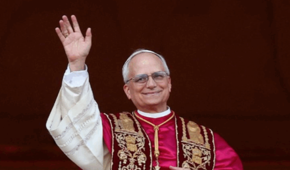
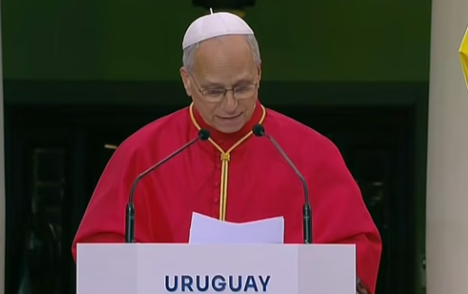
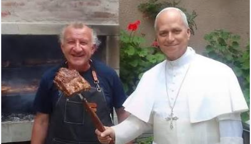

¿Quién es el Papa León XIV?

León XIV es el Papa de la Iglesia Católica. Fue elegido el 8 de mayo de 2025 y su nombre de nacimiento es Robert Francis Prevost. Como líder de la Iglesia Católica, transmite mensajes relacionados con la fe, la paz, la solidaridad y el respeto entre las personas.

Su llegada a Uruguay
El Papa León XIV visitó Uruguay entre el 6 y el 8 de noviembre de 2026, como parte de un viaje apostólico por América del Sur que también incluyó Argentina y Perú.
Llegó al Aeropuerto Internacional de Carrasco el viernes 6 de noviembre. Luego participó de una ceremonia de bienvenida en la Plaza Independencia de Montevideo, donde fue recibido por autoridades del país.
¿Qué actividades realizó?
- Participó de una ceremonia de bienvenida en Montevideo.
- Se reunió con el presidente Yamandú Orsi.
- Visitó la Catedral Metropolitana de Montevideo.
- Realizó actividades pastorales en Paysandú.
- Visitó Florida y el Santuario de la Virgen de los Treinta y Tres.

¿Qué valores nos transmite su visita?
La visita del Papa nos invita a reflexionar sobre valores importantes como el respeto, la solidaridad, la paz, la responsabilidad y la convivencia. Estos valores también están relacionados con nuestras decisiones diarias y con la manera en que tratamos a las demás personas.
Reflexión final
La llegada del Papa León XIV fue un acontecimiento importante para muchas personas en Uruguay. Su mensaje nos recuerda la importancia de construir una sociedad donde exista el respeto, la unión, la comprensión y la solidaridad.